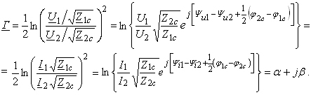

2.8.2.2. Постоянная передачи
где α- постоянная ослабления; β - постоянная фазы ЧП. Хотя четырёхполюсник несимметричный, однако, согласно принципу взаимности линейных цепей, постоянная передачи Г (комплексная безразмерная величина) будет одной и той же при подключении источника энергии как со стороны первичных, так и со стороны вторичных выводов. Если учесть, что I1 = U1 / Z1c; I2 = U2 / Z2c или U1 = Z1c I1; U2 = Z2c I2, то выражение (2.142) можно записать в виде  Для симметричного ЧП постоянная передачи
|
|||||
 ,
,